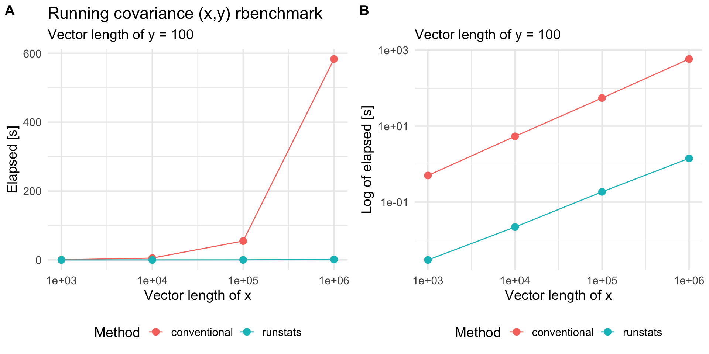
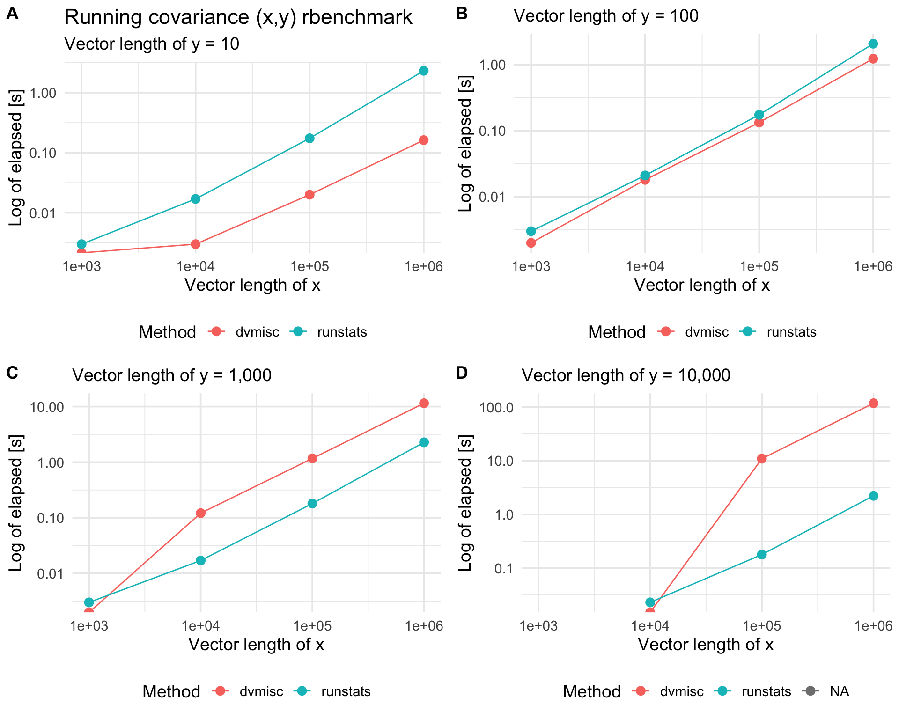

Package runstats provides methods for fast computation of running sample statistics for time series. The methods utilize Convolution Theorem to compute convolutions via Fast Fourier Transform (FFT). Implemented running statistics include:
- mean,
- standard deviation,
- variance,
- covariance,
- correlation,
- euclidean distance.
Table of Contents
Website
Package website is located here.
Installation
install.packages("runstats")
Usage
library(runstats)
## Example: running correlation
x0 <- sin(seq(0, 2 * pi * 5, length.out = 1000))
x <- x0 + rnorm(1000, sd = 0.1)
pattern <- x0[1:100]
out1 <- RunningCor(x, pattern)
out2 <- RunningCor(x, pattern, circular = TRUE)
## Example: running mean
x <- cumsum(rnorm(1000))
out1 <- RunningMean(x, W = 100)
out2 <- RunningMean(x, W = 100, circular = TRUE)
Running statistics
To better explain the details of running statistics, package’s function runstats.demo(func.name) allows to visualize how the output of each running statistics method is generated. To run the demo, use func.name being one of the methods’ names:
"RunningMean","RunningSd","RunningVar","RunningCov","RunningCor","RunningL2Norm".
## Example: demo for running correlation method
runstats.demo("RunningCor")

## Example: demo for running mean method
runstats.demo("RunningMean")

Performance
We use rbenchmark to measure elapsed time of RunningCov execution, for different lengths of time-series x and fixed length of the shorter pattern y.
library(rbenchmark)
library(ggplot2)
set.seed (20190315)
x.N.seq <- 10^(3:7)
x.list <- lapply(x.N.seq, function(N) runif(N))
y <- runif(100)
## Benchmark execution time of RunningCov
out.df <- data.frame()
for (x.tmp in x.list){
out.df.tmp <- benchmark(
"runstats" = runstats::RunningCov(x.tmp, y),
replications = 10,
columns = c("test", "replications", "elapsed",
"relative", "user.self", "sys.self"))
out.df.tmp$x_length <- length(x.tmp)
out.df.tmp$pattern_length <- length(y)
out.df <- rbind(out.df, out.df.tmp)
}
knitr::kable(out.df)
| test | replications | elapsed | relative | user.self | sys.self | x_length | pattern_length |
|---|---|---|---|---|---|---|---|
| runstats | 10 | 0.004 | 1 | 0.003 | 0.000 | 1000 | 100 |
| runstats | 10 | 0.023 | 1 | 0.019 | 0.004 | 10000 | 100 |
| runstats | 10 | 0.183 | 1 | 0.148 | 0.035 | 100000 | 100 |
| runstats | 10 | 1.700 | 1 | 1.592 | 0.107 | 1000000 | 100 |
| runstats | 10 | 19.852 | 1 | 17.185 | 2.576 | 10000000 | 100 |
Compare RunningCov {runstats} with a conventional method
To compare runstats performance with “conventional” loop-based way of computing running covariance in R, we use rbenchmark package to measure elapsed time of runstats::RunningCov and running covariance implemented with sapply loop, for different lengths of time-series x and fixed length of the shorter time-series y.
## Conventional approach
RunningCov.sapply <- function(x, y){
l_x <- length(x)
l_y <- length(y)
sapply(1:(l_x - l_y + 1), function(i){
cov(x[i:(i+l_y-1)], y)
})
}
out.df2 <- data.frame()
for (x.tmp in x.list[c(1:4)]){
out.df.tmp <- benchmark(
"conventional" = RunningCov.sapply(x.tmp, y),
"runstats" = runstats::RunningCov(x.tmp, y),
replications = 10,
columns = c("test", "replications", "elapsed",
"relative", "user.self", "sys.self"))
out.df.tmp$x_length <- length(x.tmp)
out.df2 <- rbind(out.df2, out.df.tmp)
}
Benchmark results
plt1 <-
ggplot(out.df2, aes(x = x_length, y = elapsed, color = test)) +
geom_line() + geom_point(size = 3) + scale_x_log10() +
theme_minimal(base_size = 14) +
labs(x = "Vector length of x",
y = "Elapsed [s]", color = "Method",
title = "Running covariance (x,y) rbenchmark",
subtitle = "Vector length of y = 100") +
theme(legend.position = "bottom")
plt2 <-
plt1 +
scale_y_log10() +
labs(y = "Log of elapsed [s]", title = "")
cowplot::plot_grid(plt1, plt2, nrow = 1, labels = c('A', 'B'))

Compare RunningCov {runstats} with sliding_cov {dvmisc} c++ implementation
dvmisc package (GitHub, CRAN) is a package for Convenience Functions, Moving Window Statistics, and Graphics, and includes functions for calculating moving-window statistics efficiently via c++, written by Dane Van Domelen. Here, we compare RunningCov {runstats} performance with c++ implementation from sliding_cov {dvmisc}. Dane contributed the code in its large part.
# devtools::install_github("vandomed/dvmisc")
library(dvmisc)
set.seed(20100315)
x.N.seq <- 10^(3:6)
x.list <- lapply(x.N.seq, function(N) runif(N))
get.out.df <- function(y){
out.df <- data.frame()
for (x.tmp in x.list){
if (length(x.tmp) < length(y)){
out.df.tmp <- data.frame(
test = NA, replications = NA, elapsed = NA, relative = NA,
user.self = NA, sys.self = NA)
} else {
out.df.tmp <- benchmark(
"runstats" = runstats::RunningCov(x.tmp, y),
"dvmisc" = dvmisc::sliding_cov(y, x.tmp),
replications = 10,
columns = c("test", "replications", "elapsed",
"relative", "user.self", "sys.self"))
}
out.df.tmp$x_length <- length(x.tmp)
out.df <- rbind(out.df, out.df.tmp)
}
return(out.df)
}
out.df_y10 <- get.out.df(runif(10^1))
out.df_y100 <- get.out.df(runif(10^2))
out.df_y1000 <- get.out.df(runif(10^3))
out.df_y10000 <- get.out.df(runif(10^4))
Benchmark results
get.plt <- function(data, subtitle){
ggplot(data, aes(x = x_length, y = elapsed, color = test)) +
geom_line() + geom_point(size = 3) + scale_x_log10() +
theme_minimal(base_size = 14) + scale_y_log10() +
labs(x = "Vector length of x",
y = "Log of elapsed [s]",
color = "Method",
subtitle = subtitle) +
theme(legend.position = "bottom")
}
plt1 <- get.plt(out.df_y10, "Vector length of y = 10") +
labs(title = "Running covariance (x,y) rbenchmark")
plt2 <- get.plt(out.df_y100, "Vector length of y = 100")
plt3 <- get.plt(out.df_y1000, "Vector length of y = 1,000")
plt4 <- get.plt(out.df_y10000, "Vector length of y = 1,0000")
cowplot::plot_grid(plt1, plt2, plt3, plt4, nrow = 2, labels = c('A', 'B', 'C', 'D'))

Session info
sessioninfo::session_info()
## ─ Session info ───────────────────────────────────────────────────────────────
## setting value
## version R version 3.5.2 (2018-12-20)
## os macOS Mojave 10.14.2
## system x86_64, darwin15.6.0
## ui X11
## language (EN)
## collate en_US.UTF-8
## ctype en_US.UTF-8
## tz America/New_York
## date 2019-11-14
##
## ─ Packages ───────────────────────────────────────────────────────────────────
## package * version date lib source
## assertthat 0.2.1 2019-03-21 [1] CRAN (R 3.5.2)
## cli 1.1.0 2019-03-19 [1] CRAN (R 3.5.2)
## colorspace 1.4-1 2019-03-18 [1] CRAN (R 3.5.2)
## crayon 1.3.4 2017-09-16 [1] CRAN (R 3.5.0)
## digest 0.6.22 2019-10-21 [1] CRAN (R 3.5.2)
## dplyr 0.8.3 2019-07-04 [1] CRAN (R 3.5.2)
## evaluate 0.14 2019-05-28 [1] CRAN (R 3.5.2)
## fftwtools 0.9-8 2017-03-25 [1] CRAN (R 3.5.0)
## ggplot2 * 3.2.1 2019-08-10 [1] CRAN (R 3.5.2)
## glue 1.3.1 2019-03-12 [1] CRAN (R 3.5.2)
## gtable 0.3.0 2019-03-25 [1] CRAN (R 3.5.2)
## htmltools 0.3.6 2017-04-28 [1] CRAN (R 3.5.0)
## knitr 1.26 2019-11-12 [1] CRAN (R 3.5.2)
## lazyeval 0.2.2 2019-03-15 [1] CRAN (R 3.5.2)
## magrittr 1.5 2014-11-22 [1] CRAN (R 3.5.0)
## munsell 0.5.0 2018-06-12 [1] CRAN (R 3.5.0)
## pillar 1.4.2 2019-06-29 [1] CRAN (R 3.5.2)
## pkgconfig 2.0.3 2019-09-22 [1] CRAN (R 3.5.2)
## purrr 0.3.3 2019-10-18 [1] CRAN (R 3.5.2)
## R6 2.4.1 2019-11-12 [1] CRAN (R 3.5.2)
## rbenchmark * 1.0.0 2012-08-30 [1] CRAN (R 3.5.0)
## Rcpp 1.0.3 2019-11-08 [1] CRAN (R 3.5.2)
## rlang 0.4.1 2019-10-24 [1] CRAN (R 3.5.2)
## rmarkdown 1.15 2019-08-21 [1] CRAN (R 3.5.2)
## rstudioapi 0.10 2019-03-19 [1] CRAN (R 3.5.2)
## runstats * 1.1.0 2019-11-14 [1] CRAN (R 3.5.2)
## scales 1.0.0 2018-08-09 [1] CRAN (R 3.5.0)
## sessioninfo 1.1.1 2018-11-05 [1] CRAN (R 3.5.0)
## stringi 1.4.3 2019-03-12 [1] CRAN (R 3.5.2)
## stringr 1.4.0 2019-02-10 [1] CRAN (R 3.5.2)
## tibble 2.1.3 2019-06-06 [1] CRAN (R 3.5.2)
## tidyselect 0.2.5 2018-10-11 [1] CRAN (R 3.5.0)
## withr 2.1.2 2018-03-15 [1] CRAN (R 3.5.0)
## xfun 0.11 2019-11-12 [1] CRAN (R 3.5.2)
## yaml 2.2.0 2018-07-25 [1] CRAN (R 3.5.0)
##
## [1] /Library/Frameworks/R.framework/Versions/3.5/Resources/library